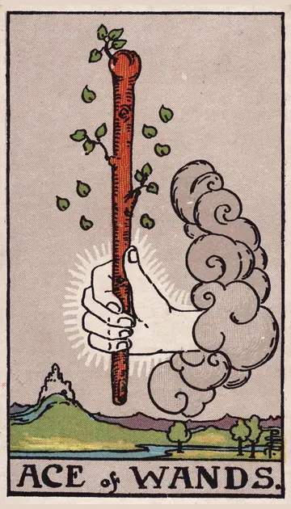

正位置ワンドのエースの正位置
キーワード：情熱・始まり・ひらめき
恋愛
気持ちが一気に燃え上がりやすい、始まりの時です。
相手の気持ちあなたに強い関心を持ち、もっと近づきたいと感じているようです。
この先新しい恋の始まりや、関係の進展がありそうです。
アドバイス心が動いたら、その気持ちを素直に行動に移しましょう。
気をつけること勢いだけで突っ走らず、相手の反応も見ましょう。
この先新しい恋の始まりや、関係の進展がありそうです。
アドバイス心が動いたら、その気持ちを素直に行動に移しましょう。
気をつけること勢いだけで突っ走らず、相手の反応も見ましょう。
人間関係
新しいつながりが生まれ、活気が出てくる時です。
相手の気持ちあなたと一緒に何かを始めたいと感じているようです。
この先刺激をくれる人との出会いがありそうです。
アドバイス自分から新しい輪に飛び込んでみましょう。
気をつけること熱くなりすぎて、周りを置いていかないように。
この先刺激をくれる人との出会いがありそうです。
アドバイス自分から新しい輪に飛び込んでみましょう。
気をつけること熱くなりすぎて、周りを置いていかないように。
仕事・学業
新しい企画や挑戦を始めるのに向いた時期です。
この先始めたことが、大きく育っていきそうです。
アドバイスひらめいたアイデアは、すぐにメモして形にし始めましょう。
気をつけること始めることに満足して、続ける準備を忘れないように。
アドバイスひらめいたアイデアは、すぐにメモして形にし始めましょう。
気をつけること始めることに満足して、続ける準備を忘れないように。
お金
新しい収入のきっかけが、生まれやすい時です。
この先新しい収入の芽が出てきそうです。
アドバイス思いついたお金のアイデアを、小さく試してみましょう。
気をつけること準備なしに、大きなお金を動かさないように。
アドバイス思いついたお金のアイデアを、小さく試してみましょう。
気をつけること準備なしに、大きなお金を動かさないように。
生活
暮らしに、新しい楽しみが生まれる時です。
この先新しい楽しみが、毎日に張りをくれそうです。
アドバイス新しい趣味や習慣を、気軽に始めてみましょう。
気をつけること始めることに夢中で、生活リズムを崩さないように。
アドバイス新しい趣味や習慣を、気軽に始めてみましょう。
気をつけること始めることに夢中で、生活リズムを崩さないように。
今日の運勢
やる気がわいて、何かを始めたくなる日です。
この先新しい楽しみが見つかりそうです。
アドバイス気になっていたことに、今日手をつけてみましょう。
気をつけること張り切りすぎて、あとで疲れが出ないように。
アドバイス気になっていたことに、今日手をつけてみましょう。
気をつけること張り切りすぎて、あとで疲れが出ないように。
逆位置ワンドのエースの逆位置
キーワード：空回り・やる気の低下・延期
恋愛
気持ちはあるのに、なかなか動き出せない時です。
相手の気持ちあなたへの気持ちが、まだ定まっていないようです。
この先タイミングが来れば、また気持ちが動き出しそうです。
アドバイス焦らず、気持ちが自然に高まるのを待ちましょう。
気をつけること一時の気分で、関係を決めつけないように。
この先タイミングが来れば、また気持ちが動き出しそうです。
アドバイス焦らず、気持ちが自然に高まるのを待ちましょう。
気をつけること一時の気分で、関係を決めつけないように。
人間関係
関係に熱が入らず、盛り上がりに欠ける時です。
相手の気持ちあなたとの関係に、きっかけを探しているようです。
この先時間をおけば、自然と活気が戻りそうです。
アドバイス無理に盛り上げようとせず、自然体で接しましょう。
気をつけること相手の熱量と比べすぎないように。
この先時間をおけば、自然と活気が戻りそうです。
アドバイス無理に盛り上げようとせず、自然体で接しましょう。
気をつけること相手の熱量と比べすぎないように。
仕事・学業
計画が延期になったり、やる気が続かなかったりする時期です。
この先準備が整えば、延期していたことが動き出しそうです。
アドバイスやる気が出ない理由を、一度書き出してみましょう。
気をつけること中途半端なまま、次々に手を広げないように。
アドバイスやる気が出ない理由を、一度書き出してみましょう。
気をつけること中途半端なまま、次々に手を広げないように。
お金
お金のことで、やる気が空回りしやすい時です。
この先準備が整えば、流れが戻りそうです。
アドバイス計画を立ててから、動きましょう。
気をつけること思いつきの出費に気をつけて。
アドバイス計画を立ててから、動きましょう。
気をつけること思いつきの出費に気をつけて。
生活
やる気が出ず、暮らしが停滞しやすい時です。
この先きっかけがあれば、また動き出せそうです。
アドバイス小さなことから、一つだけ始めましょう。
気をつけることだらだら過ごしすぎないように。
アドバイス小さなことから、一つだけ始めましょう。
気をつけることだらだら過ごしすぎないように。
今日の運勢
気持ちが空回りしやすい日です。
この先明日には、やる気が戻ってきそうです。
アドバイス小さな楽しみを用意して、気分を上げましょう。
気をつけること気分の浮き沈みで、予定を振り回さないように。
アドバイス小さな楽しみを用意して、気分を上げましょう。
気をつけること気分の浮き沈みで、予定を振り回さないように。
このページの文章は、アプリ「ひとやすみタロット」の結果に使っている文章です。アプリでは、あなたの相談や、カードが出た位置（今の状況・これからの流れ・アドバイス）に合わせて、この中から文章を選びます。逆位置の読み方は逆位置のことをご覧ください。
「ワンドのエース」が出たら、あなたの相談ではどう読む？
アプリでは、質問への答えに合わせて、カードの言葉をあなたの相談に合わせて届けます。
Android 対応・会員登録なし